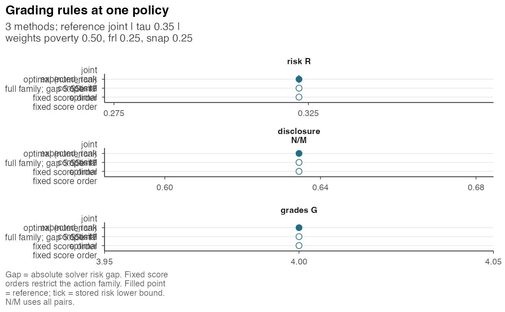
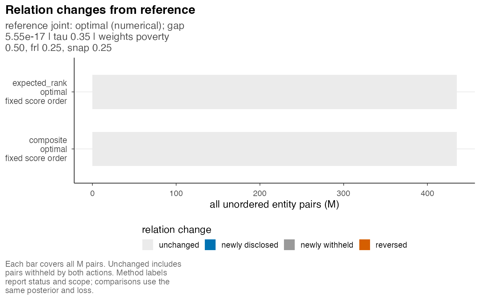

Plot Grading Rules Evaluated Under the Same Loss
postrank_plot_compare.RdStored reports are compared by risk, disclosure and grade count, or by changes in pairwise relations relative to the reference report. Risk values use the comparison object's common posterior and loss settings. The plotting function neither evaluates nor optimizes additional actions.
Usage
postrank_plot_compare(x, view = c("summary", "relations"), ..., ncol = NULL)Arguments
- x
A
postrank_comparisonfrompostrank_compare().- view
"summary"for risk, disclosure and grade-count panels;"relations"for pair-relation change counts.- ...
Unused.
- ncol
Optional positive integer number of facet columns in the summary view. Supply by name.
NULLuses three columns;ncol = 1with a taller output suits a narrow page. Ignored in the relations view.
Value
A ggplot object. Unavailable actions keep their method labels,
statuses and reasons, with unavailable points and relation counts omitted. The
relations view returns a status panel if no comparison has grades.
Details
The summary view plots risk, N/M (disclosed pairs over all unordered
pairs), and the number of grades. The reference action's point is filled;
other actions are hollow. A tick marks an available stored risk lower bound.
Method labels give status, optimization scope and any absolute risk gap.
An optimal fixed-order baseline is optimal within its contiguous partitions,
not over every possible grading; baselines have no full-family lower bound.
The relations view counts unchanged, newly disclosed, newly withheld and
reversed pairs from the reference to each alternative. Every bar covers all
M = choose(n, 2) pairs, including those withheld by both actions.
Supplied actions outside the declared grade or budget constraints are
marked outside family. Their fixed-action risks can be evaluated under
the common loss, but do not compare minima over the same feasible family.
The absence of feasibility records in older comparison objects is indicated
in the plot. These checks require reconstruction of the comparison; they
are not performed during plotting.
Examples
# Read a prepared three-criterion method comparison; no new solve or evaluation.
source(system.file("scripts", "_vignette-setup.R", package = "postrank"),
local = TRUE)
comparison <- load_or_compute("comparison_30x3_tau35")
postrank_plot_compare(comparison, ncol = 1)

Open full-size figure
postrank_plot_compare(comparison, view = "relations")

Open full-size figure